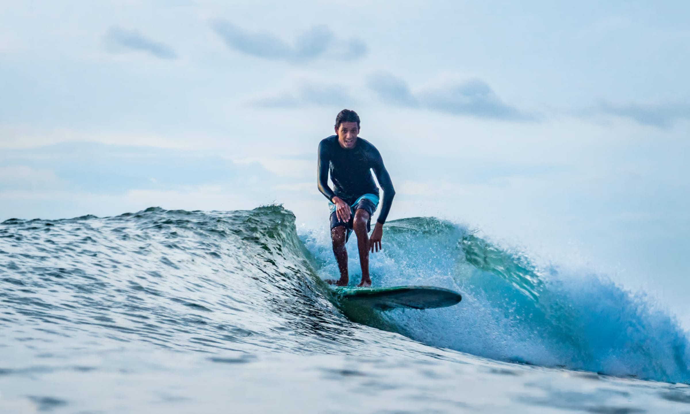

Local Guide
A local's guide to the best surf spots around Tamarindo
Beyond the main beach break — where to go once you're ready to explore the Guanacaste coast.
Tamarindo's beach break is where most people learn, but it's only one wave among many along this stretch of Guanacaste. Once you can catch and ride green waves on your own, these are the spots worth knowing.
Playa Avellanas
A long, open beach with several peaks spread along it, which means there's usually room to spread out even when it's busy. It handles a range of swell sizes well, which is part of why it's a regular stop on The Exploration.
Playa Grande
Just north of Tamarindo, across the estuary. The wave is a bit more punchy and better shaped on the right tide, with a quieter, more protected feel than the town beach — a good step up once whitewater feels too easy.
Guiones
Further down the coast, near Nosara. Guiones is known for being consistent — it holds a rideable wave more often than most spots nearby, which makes it a reliable option when the closer breaks are flat.
Marbella
Quieter and less built-up than the rest, Marbella works on its own combination of swell and wind. It's not always the first choice, but on the right day it's one of the least crowded waves within reach.
Why the spot changes
Guanacaste has a lot of coastline, and no two beaches work on the same conditions. Rather than committing to a destination in advance, we pick the spot on the day — based on swell, wind and tide — so the group surfs where things are actually lining up, not just where the itinerary says to go.
That's the real difference between a surf tour and a surf transfer: the point was never the drive. It's arriving somewhere that's working.
Next step
Ready to see these spots for yourself?
The Exploration is a guided, 3-hour surf tour to whichever of these breaks is working best that day.
Plan a tour